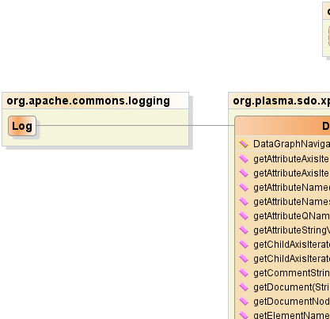
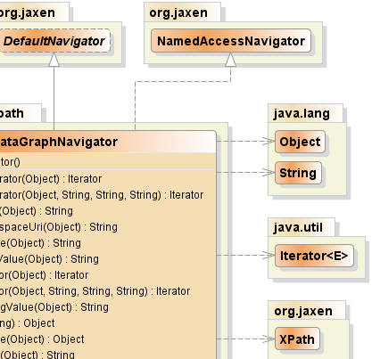
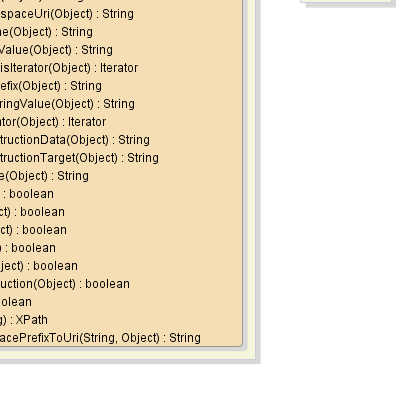

- java.lang.Object
-
- org.jaxen.DefaultNavigator
-
- org.plasma.sdo.xpath.DataGraphNavigator
-
- All Implemented Interfaces:
- java.io.Serializable, org.jaxen.NamedAccessNavigator, org.jaxen.Navigator
public class DataGraphNavigator extends org.jaxen.DefaultNavigator implements org.jaxen.NamedAccessNavigatorSupports navigation of an SDOdata graphby the Jaxen XPATH engine.This class is not intended for direct usage, but is used by the Jaxen engine during evaluation. Use
DataGraphXPathto parse an XPath against adata graph.- See Also:
XPath,DataGraph, Serialized Form-
  

-
-
Constructor Summary
Constructors Constructor and Description DataGraphNavigator()
-
Method Summary
Methods Modifier and Type Method and Description java.util.IteratorgetAttributeAxisIterator(java.lang.Object contextNode)java.util.IteratorgetAttributeAxisIterator(java.lang.Object contextNode, java.lang.String localName, java.lang.String namespacePrefix, java.lang.String namespaceURI)Retrieves anIteratorover the attribute elements that match the supplied name.java.lang.StringgetAttributeName(java.lang.Object obj)java.lang.StringgetAttributeNamespaceUri(java.lang.Object obj)java.lang.StringgetAttributeQName(java.lang.Object obj)java.lang.StringgetAttributeStringValue(java.lang.Object obj)java.util.IteratorgetChildAxisIterator(java.lang.Object contextNode)Where the given context node is a SDO Property, gets the actual value of the property wrapped in a CoreXPathValue and Iterator.java.util.IteratorgetChildAxisIterator(java.lang.Object contextNode, java.lang.String localName, java.lang.String namespacePrefix, java.lang.String namespaceURI)Retrieves anIteratorover the child elements that match the supplied local name and namespace URI.java.lang.StringgetCommentStringValue(java.lang.Object obj)java.lang.ObjectgetDocument(java.lang.String url)java.lang.ObjectgetDocumentNode(java.lang.Object contextNode)java.lang.StringgetElementName(java.lang.Object obj)java.lang.StringgetElementNamespaceUri(java.lang.Object obj)java.lang.StringgetElementQName(java.lang.Object obj)java.lang.StringgetElementStringValue(java.lang.Object obj)java.util.IteratorgetNamespaceAxisIterator(java.lang.Object contextNode)java.lang.StringgetNamespacePrefix(java.lang.Object obj)java.lang.StringgetNamespaceStringValue(java.lang.Object obj)java.util.IteratorgetParentAxisIterator(java.lang.Object contextNode)java.lang.StringgetProcessingInstructionData(java.lang.Object obj)java.lang.StringgetProcessingInstructionTarget(java.lang.Object obj)java.lang.StringgetTextStringValue(java.lang.Object obj)booleanisAttribute(java.lang.Object obj)booleanisComment(java.lang.Object obj)booleanisDocument(java.lang.Object obj)booleanisElement(java.lang.Object obj)booleanisNamespace(java.lang.Object obj)booleanisProcessingInstruction(java.lang.Object obj)booleanisText(java.lang.Object obj)org.jaxen.XPathparseXPath(java.lang.String xpath)Returns a parsed form of the given XPath string, which will be suitable for queries on Data Graph documents.java.lang.StringtranslateNamespacePrefixToUri(java.lang.String prefix, java.lang.Object context)-
Methods inherited from class org.jaxen.DefaultNavigator
getAncestorAxisIterator, getAncestorOrSelfAxisIterator, getDescendantAxisIterator, getDescendantOrSelfAxisIterator, getElementById, getFollowingAxisIterator, getFollowingSiblingAxisIterator, getNodeType, getParentNode, getPrecedingAxisIterator, getPrecedingSiblingAxisIterator, getSelfAxisIterator
-
Methods inherited from class java.lang.Object
clone, equals, finalize, getClass, hashCode, notify, notifyAll, toString, wait, wait, wait
-
Methods inherited from interface org.jaxen.Navigator
getAncestorAxisIterator, getAncestorOrSelfAxisIterator, getDescendantAxisIterator, getDescendantOrSelfAxisIterator, getElementById, getFollowingAxisIterator, getFollowingSiblingAxisIterator, getNodeType, getParentNode, getPrecedingAxisIterator, getPrecedingSiblingAxisIterator, getSelfAxisIterator
-
-
-
-
Method Detail
-
isElement
public boolean isElement(java.lang.Object obj)
- Specified by:
isElementin interfaceorg.jaxen.Navigator
-
isComment
public boolean isComment(java.lang.Object obj)
- Specified by:
isCommentin interfaceorg.jaxen.Navigator
-
isText
public boolean isText(java.lang.Object obj)
- Specified by:
isTextin interfaceorg.jaxen.Navigator
-
isAttribute
public boolean isAttribute(java.lang.Object obj)
- Specified by:
isAttributein interfaceorg.jaxen.Navigator
-
isProcessingInstruction
public boolean isProcessingInstruction(java.lang.Object obj)
- Specified by:
isProcessingInstructionin interfaceorg.jaxen.Navigator
-
isDocument
public boolean isDocument(java.lang.Object obj)
- Specified by:
isDocumentin interfaceorg.jaxen.Navigator
-
isNamespace
public boolean isNamespace(java.lang.Object obj)
- Specified by:
isNamespacein interfaceorg.jaxen.Navigator
-
getElementName
public java.lang.String getElementName(java.lang.Object obj)
- Specified by:
getElementNamein interfaceorg.jaxen.Navigator
-
getElementNamespaceUri
public java.lang.String getElementNamespaceUri(java.lang.Object obj)
- Specified by:
getElementNamespaceUriin interfaceorg.jaxen.Navigator
-
getAttributeName
public java.lang.String getAttributeName(java.lang.Object obj)
- Specified by:
getAttributeNamein interfaceorg.jaxen.Navigator
-
getAttributeNamespaceUri
public java.lang.String getAttributeNamespaceUri(java.lang.Object obj)
- Specified by:
getAttributeNamespaceUriin interfaceorg.jaxen.Navigator
-
getChildAxisIterator
public java.util.Iterator getChildAxisIterator(java.lang.Object contextNode)
Where the given context node is a SDO Property, gets the actual value of the property wrapped in a CoreXPathValue and Iterator. This wrapper approach supports subsequent navigator tests for isText() where we want any Data Object value to be thought of as XML text and be returned. In particular we want null values to be returned so that clients can at least detect if the XPath was navigated successfully.- Specified by:
getChildAxisIteratorin interfaceorg.jaxen.Navigator- Overrides:
getChildAxisIteratorin classorg.jaxen.DefaultNavigator- Parameters:
contextNode- the context node- See Also:
CoreXPathResult,DefaultNavigator.getChildAxisIterator(java.lang.Object)
-
getChildAxisIterator
public java.util.Iterator getChildAxisIterator(java.lang.Object contextNode, java.lang.String localName, java.lang.String namespacePrefix, java.lang.String namespaceURI)Retrieves anIteratorover the child elements that match the supplied local name and namespace URI.- Specified by:
getChildAxisIteratorin interfaceorg.jaxen.NamedAccessNavigator- Parameters:
contextNode- the origin context nodelocalName- the local name of the children to return, always presentnamespacePrefix- ignored; prefixes are not used when matching in XPathnamespaceURI- the URI of the namespace of the children to return- Returns:
- an Iterator that traverses the named children, or null if none
-
getNamespaceAxisIterator
public java.util.Iterator getNamespaceAxisIterator(java.lang.Object contextNode)
- Specified by:
getNamespaceAxisIteratorin interfaceorg.jaxen.Navigator- Overrides:
getNamespaceAxisIteratorin classorg.jaxen.DefaultNavigator
-
getParentAxisIterator
public java.util.Iterator getParentAxisIterator(java.lang.Object contextNode)
- Specified by:
getParentAxisIteratorin interfaceorg.jaxen.Navigator- Overrides:
getParentAxisIteratorin classorg.jaxen.DefaultNavigator
-
getAttributeAxisIterator
public java.util.Iterator getAttributeAxisIterator(java.lang.Object contextNode)
- Specified by:
getAttributeAxisIteratorin interfaceorg.jaxen.Navigator- Overrides:
getAttributeAxisIteratorin classorg.jaxen.DefaultNavigator
-
getAttributeAxisIterator
public java.util.Iterator getAttributeAxisIterator(java.lang.Object contextNode, java.lang.String localName, java.lang.String namespacePrefix, java.lang.String namespaceURI)Retrieves anIteratorover the attribute elements that match the supplied name.- Specified by:
getAttributeAxisIteratorin interfaceorg.jaxen.NamedAccessNavigator- Parameters:
contextNode- the origin context nodelocalName- the local name of the attributes to return, always presentnamespacePrefix- the prefix of the namespace of the attributes to returnnamespaceURI- the URI of the namespace of the attributes to return- Returns:
- an Iterator that traverses the named attributes, not null
-
parseXPath
public org.jaxen.XPath parseXPath(java.lang.String xpath) throws org.jaxen.saxpath.SAXPathExceptionReturns a parsed form of the given XPath string, which will be suitable for queries on Data Graph documents.- Specified by:
parseXPathin interfaceorg.jaxen.Navigator- Throws:
org.jaxen.saxpath.SAXPathException
-
getDocumentNode
public java.lang.Object getDocumentNode(java.lang.Object contextNode)
- Specified by:
getDocumentNodein interfaceorg.jaxen.Navigator- Overrides:
getDocumentNodein classorg.jaxen.DefaultNavigator
-
getElementQName
public java.lang.String getElementQName(java.lang.Object obj)
- Specified by:
getElementQNamein interfaceorg.jaxen.Navigator
-
getAttributeQName
public java.lang.String getAttributeQName(java.lang.Object obj)
- Specified by:
getAttributeQNamein interfaceorg.jaxen.Navigator
-
getNamespaceStringValue
public java.lang.String getNamespaceStringValue(java.lang.Object obj)
- Specified by:
getNamespaceStringValuein interfaceorg.jaxen.Navigator
-
getNamespacePrefix
public java.lang.String getNamespacePrefix(java.lang.Object obj)
- Specified by:
getNamespacePrefixin interfaceorg.jaxen.Navigator
-
getTextStringValue
public java.lang.String getTextStringValue(java.lang.Object obj)
- Specified by:
getTextStringValuein interfaceorg.jaxen.Navigator
-
getAttributeStringValue
public java.lang.String getAttributeStringValue(java.lang.Object obj)
- Specified by:
getAttributeStringValuein interfaceorg.jaxen.Navigator
-
getElementStringValue
public java.lang.String getElementStringValue(java.lang.Object obj)
- Specified by:
getElementStringValuein interfaceorg.jaxen.Navigator
-
getProcessingInstructionTarget
public java.lang.String getProcessingInstructionTarget(java.lang.Object obj)
- Specified by:
getProcessingInstructionTargetin interfaceorg.jaxen.Navigator- Overrides:
getProcessingInstructionTargetin classorg.jaxen.DefaultNavigator
-
getProcessingInstructionData
public java.lang.String getProcessingInstructionData(java.lang.Object obj)
- Specified by:
getProcessingInstructionDatain interfaceorg.jaxen.Navigator- Overrides:
getProcessingInstructionDatain classorg.jaxen.DefaultNavigator
-
getCommentStringValue
public java.lang.String getCommentStringValue(java.lang.Object obj)
- Specified by:
getCommentStringValuein interfaceorg.jaxen.Navigator
-
translateNamespacePrefixToUri
public java.lang.String translateNamespacePrefixToUri(java.lang.String prefix, java.lang.Object context)- Specified by:
translateNamespacePrefixToUriin interfaceorg.jaxen.Navigator- Overrides:
translateNamespacePrefixToUriin classorg.jaxen.DefaultNavigator
-
getDocument
public java.lang.Object getDocument(java.lang.String url) throws org.jaxen.FunctionCallException- Specified by:
getDocumentin interfaceorg.jaxen.Navigator- Overrides:
getDocumentin classorg.jaxen.DefaultNavigator- Throws:
org.jaxen.FunctionCallException
-
-